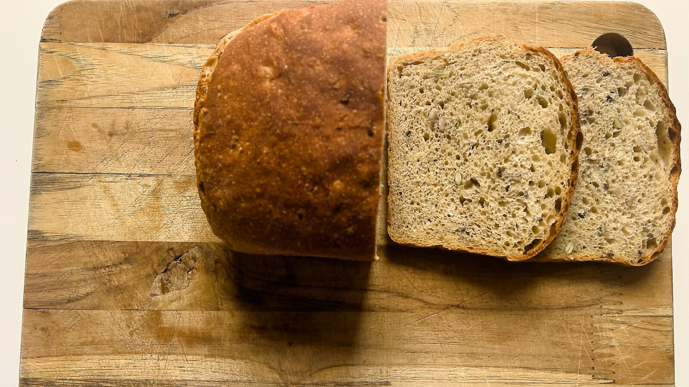
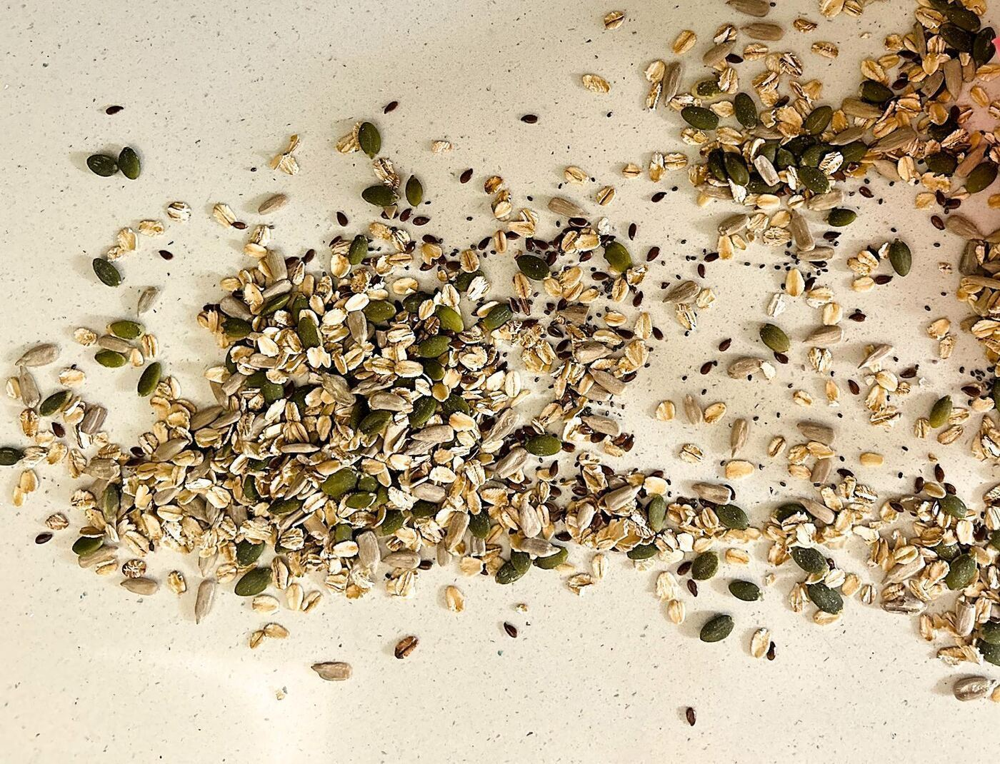
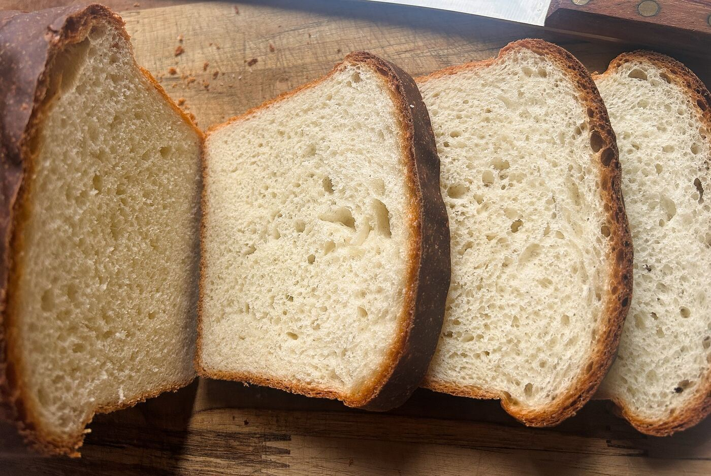
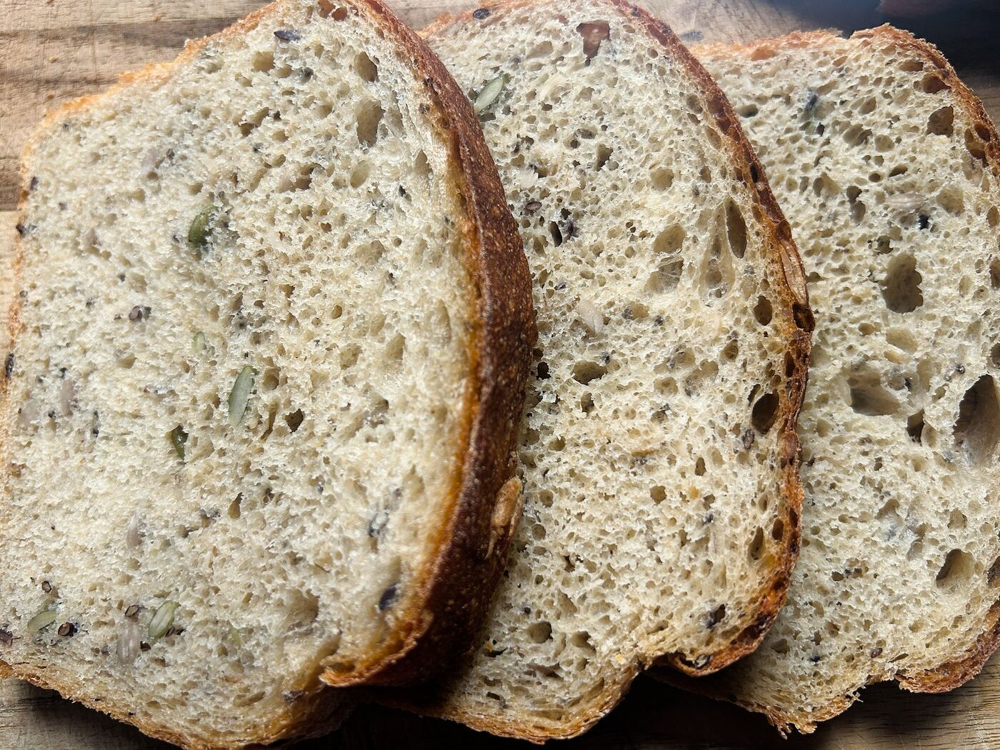
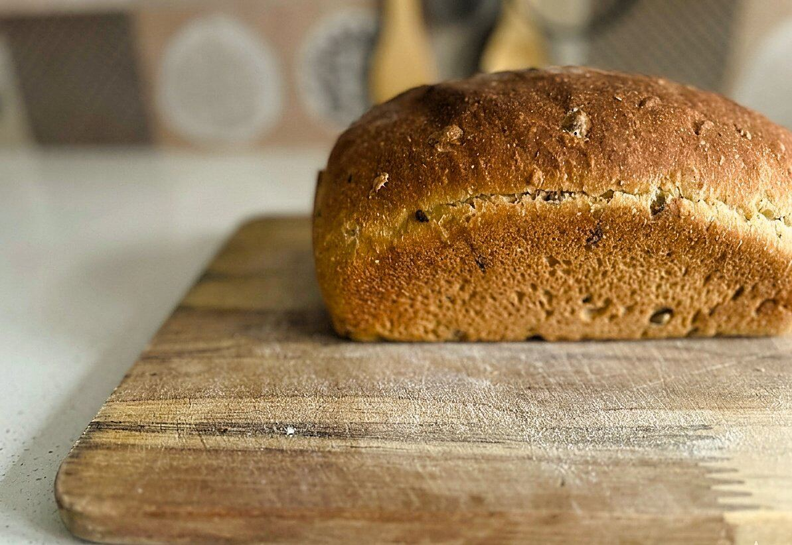
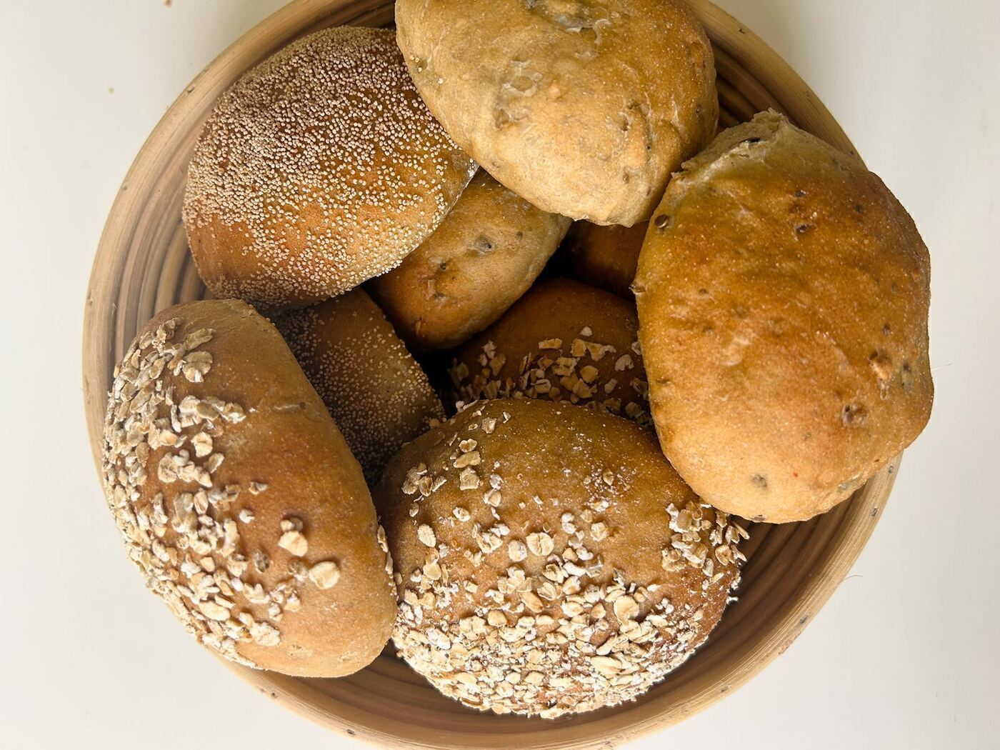

What Sets Our Bread Apart
- No commercial improvers or enhancers
- No bleaching agents
- No bread softeners
- No preservatives
- Naturally fermented
- Simple ingredients

Small-batch loaves and rolls made with simple ingredients, patient fermentation, and no commercial shortcuts.
Explore BreadsTRANCHÉ is a small-batch bakery focused on everyday breads that taste fuller, keep their character, and reflect the ingredients they are made from.
Our Philosophy
We are building a bakery around quality and trust. That means baking in small batches, keeping storage time low, and making bread that feels closer to the kitchen than to factory shelves.
Our breads are baked in small batches so they reach customers fresher and with better character than mass-produced loaves.
Selected breads are made closer to delivery time, with minimal storage, so the product you receive feels more alive and less held back.
We keep ingredients clear, avoid hidden shortcuts, and show the breads as they are so the experience stays honest from website to table.
Time is part of the recipe. Longer fermentation helps build better flavor, structure, and keeping quality.
We use flour, water, salt, yeast, and selected enrichments where the bread calls for them, not improvers to force softness.
The breads on this site are our actual bakes from the kitchen, photographed as they are, without styling tricks.

We bake in limited quantities so each batch gets the time and attention it needs. Many breads are baked closer to delivery, and orders are best placed with a little notice.
Soft and lightly sweet, with a tender crumb that works beautifully for toast, sandwiches, and everyday eating.

A hearty 50:50 whole wheat and white flour loaf with grains and seeds throughout, giving it a nutty finish, balanced softness, and plenty of texture.


All images are from our kitchen.
Small-batch rolls with a wholesome crumb and balanced texture, made for breakfast plates, sliders, and everyday meals.

A few notes on how we bake and why our breads behave differently from packaged supermarket loaves.
Our bread is priced differently from packaged bread because we bake in small batches, ferment the dough more slowly, and avoid commercial improvers and preservatives. That process takes more time, more hands-on work, and better ingredients than bread made mainly for speed and scale.
Bread improvers are additives used in commercial baking to speed up production, strengthen dough, and make results more uniform. We do not use them, so our dough develops more naturally over time.
Preferment is a technique where part of the dough is fermented in advance. In our process, that stage usually takes 12 to 15 hours, helping develop better flavor, structure, and aroma before the final mix.
Without improvers and softeners, our breads have a more natural crumb and structure. Higher whole wheat breads will also feel denser, which is a normal part of baking with the grain rather than against it.
Our breads are made without bread softeners and preservatives, so they can dry faster if left exposed to air or stored in the refrigerator. That is normal for bread made with simple ingredients. For the best results, keep the loaf covered at room temperature for short-term use or freeze extra slices.
You can place your order via WhatsApp. We'll confirm availability and schedule your bake.
Most orders are ready the next day. Because we bake in small batches, 24 hours' notice is preferred.
We bake in limited batches based on orders. This helps us maintain quality and freshness rather than producing large quantities in advance.
Usually no. Most breads are baked against orders or limited planned batches, so availability can vary. Messaging ahead is the best way to reserve what you want.
Our breads do not contain preservatives, so they are best eaten within 2 to 3 days. For the best eating quality, we recommend enjoying them within 2 days. For longer storage, freeze sliced bread and toast as needed.
No. All our breads contain gluten, and some varieties also include dairy or nuts. Everything is prepared in the same kitchen, so traces of these ingredients may be present.
Since we work with natural ingredients and small batches, slight variations in texture can occur. This is a normal part of real bread made without stabilizers or industrial controls.
Store bread in a cool, dry place and keep it covered so it does not dry out too quickly. For longer storage, freeze sliced bread and toast it when needed. Refrigeration is not recommended.
We deliver our breads whole by default so they retain their taste, texture, and aroma better. If you prefer sliced bread, we can do that on request.
No. Our breads are made without preservatives, improvers, or commercial enhancers.
Yes. All images on this site are of bread we bake in our kitchen. We do not use stock or AI-generated visuals.
Selected breads can be adjusted based on preference, such as changing the proportion of whole wheat. Availability depends on the dough and the batch, so it is best to check with us on WhatsApp before placing your order.
100% whole wheat bread tends to be denser and less soft. We create our own flour blends to achieve a better balance of texture, flavor, and structure while still keeping a high proportion of whole wheat. If you're looking for a higher whole wheat percentage, feel free to check with us on WhatsApp.
Introductory Offer
We are offering 30% off on the first two purchases, capped at Rs. 500 per purchase, to make trying the breads easier in the early phase.
Delivery Offer
A simple launch incentive to reduce hesitation, encourage trial, and make repeat ordering easier as the bakery grows.
Message your name, contact details, and order on WhatsApp, and we will promptly get back to you.
Message on WhatsApp